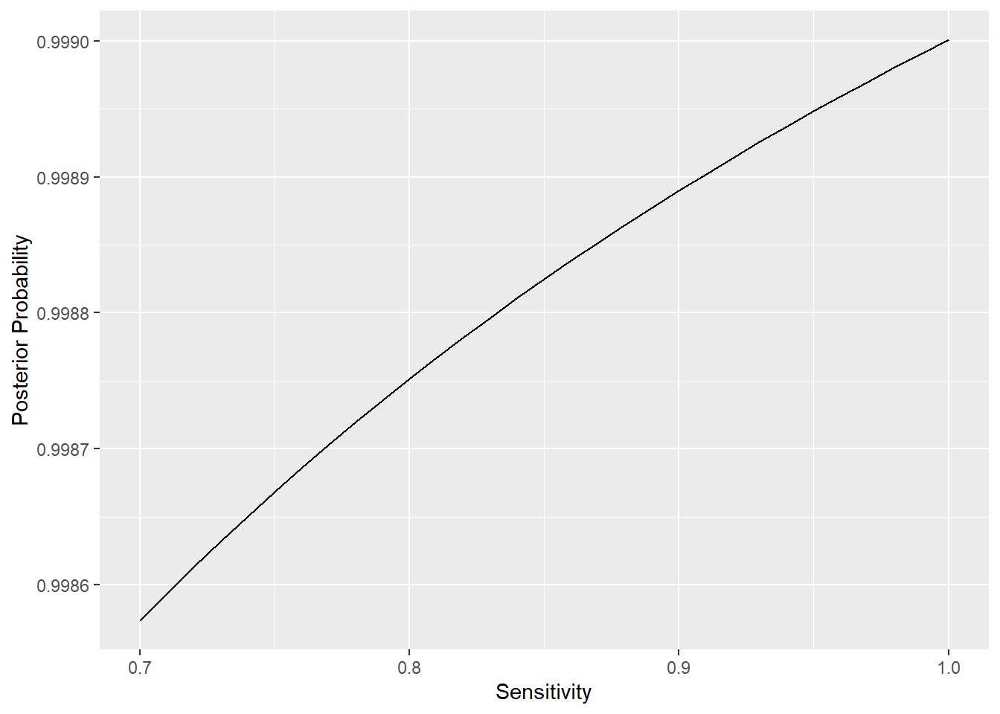
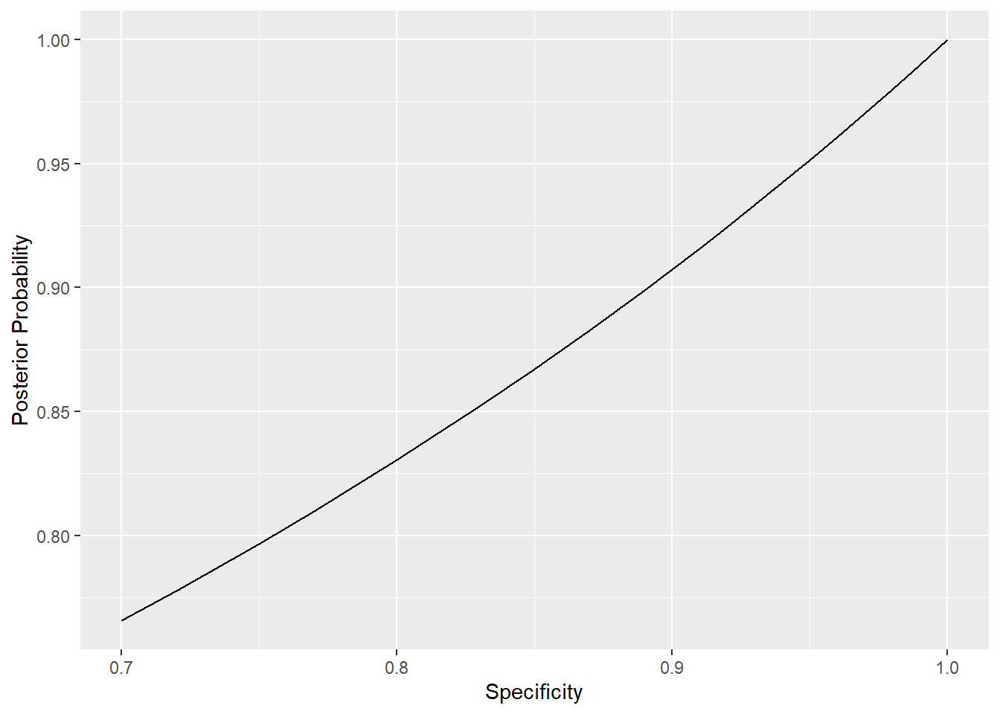
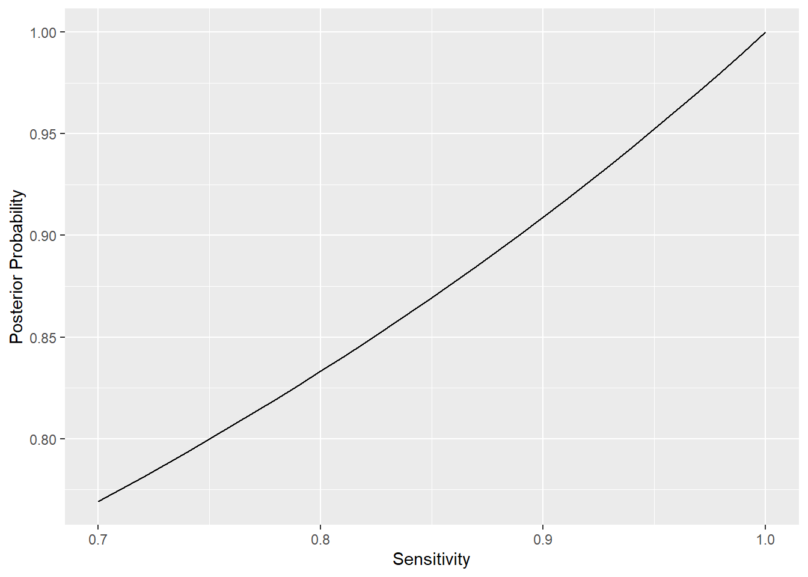
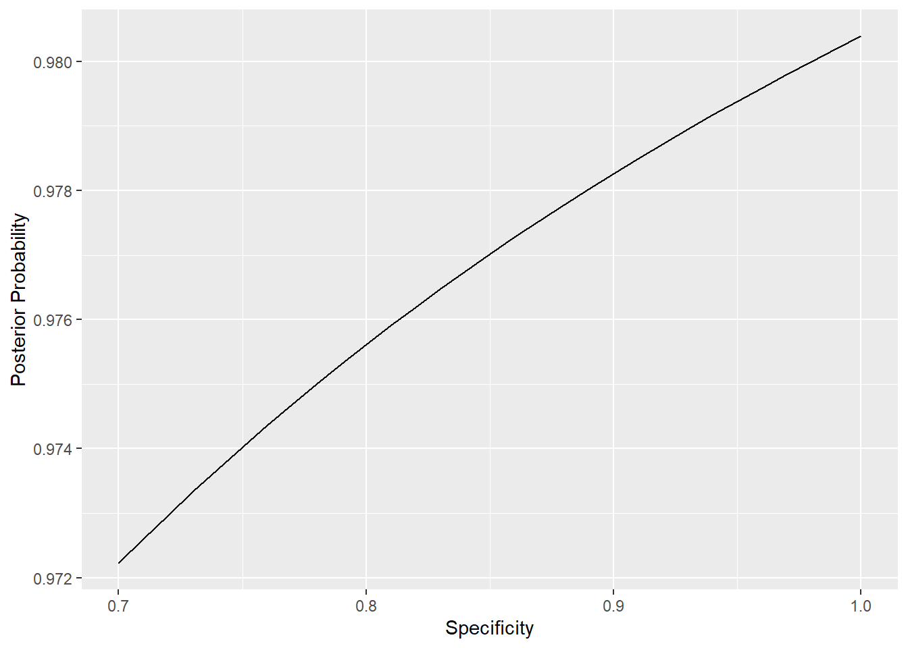

3 PCR testing (COVID-19)
PCR stands for a laboratory technique known as polymerase chain reaction (you might remember this from the DNA video). In the PCR test, the goal is to selectively amplify trace amounts of genetic material, identifying specific parts of DNA.
PCR only works on DNA, and the COVID-19 virus uses RNA as its genetic code. RNA is similar to DNA, but only has a single strand. Fortunately, viral enzymes to convert RNA into DNA were discovered decades ago, to find unique signatures in RNA, too.
Once a patient arrives at a safe testing site, a sample is taken by the health care team. Usually that means a narrow swab is placed in a person's nose or mouth to collect cells from the back of the throat. The sample is then analysed in a laboratory and the patient gets the result of the test after 1-3 days.
If you want to learn more, you can find this description and further explanation at https://discoverysedge.mayo.edu/2020/03/27/the-science-behind-the-test-for-the-covid-19-virus/
Here is a summary of the performance of PCR tests:
- they give a negative result in 99.9% of the cases when the patient does not have COVID-19, i.e. the proportion of false positives is 0.1%;
- they give a positive result in 98% of the cases when the patient has a COVID-19 infection, i.e. the proportion of false negatives is 2%.
What are sensitivity, specificity, and base rate of the PCR test?
3.1 P(Infection|Positive Test)
Let us now assume a prevalence of COVID-19 of 1% in the public. If the PCR test gives a positive result for a randomly selected patient, what is the conditional probability that they have a COVID-19 infection? (To 2 decimal places).
Let Inf denote infection, T+ denote a positive test. Then, use Bayes' theorem to compute the conditional probability:
\(P(Inf|T+)=\frac{P(T+|Inf) \times P(Inf)}{P(T+|Inf) \times P(Inf)+P(T+|no Inf) \times P(no Inf)}\)
Let Inf denote infection, T+ denote a positive test. Then, use Bayes' theorem to compute the conditional probability:
\(P(Inf|T+)=\frac{P(T+|Inf) \times P(Inf)}{P(T+|Inf) \times P(Inf)+P(T+|no Inf) \times P(no Inf)}=\frac{0.98 \times 0.01}{0.98 \times 0.01 + 0.001 \times 0.99}\approx 0.91\)
Now, how does the answer depend on the sensitivity and specificity? Which of the two characteristics is more crucial for the conditional probability (of infection, given a positive test) to become satisfactorily high?
Here we will use R to explore what happens when we vary the sensitivity and specificity of the test.
Set the values for the sensitivity and specificity as provided in the description and assume a base rate (prevalence of COVID-19 infections in the public) of 1%:
sens <- 0.98
spec <- 0.999
brate <- 0.01Let \(C\) denote the event of a COVID-19 infection. Thus, \(C^{c}\) is the event of no COVID-19 infection. Let \(T+\) denote the event of a positive test result. The probability of an infection, given the test comes out positive can be calculated using Bayes’ theorem as follows:
\[\begin{align*}
P(C|T+)=\frac{P(T+|C)\times P(C)}{P(T+|C)\times P(C) + P(T+|C^{c}) \times P(C^{c})}
\end{align*}\]
Note: \[\begin{align*} P(T+|C)\times P(C)&=\text{sensitivity} \times \text{base rate}\\ P(T+|C^{c})\times P(C^{c})&=(1-\text{specificity}) \times (1-\text{base rate}) \end{align*}\]
Thus, we get the following: \[\begin{align*} P(C|T+)=\frac{\text{sensitivity} \times \text{base rate}}{\text{sensitivity} \times \text{base rate} + (1-\text{specificity}) \times (1-\text{base rate})} \end{align*}\]
Check that the formula above gives the right answer for the COVID-19 example we looked at in the last question above. The result we computed manually was approximately 0.91.
3.2 Exploration of sensitivity/specificity
We want to explore the effects of sensitivity, specificity and base rate on the posterior probability of a patient having a COVID-19 infection, given that the test is positive. First, let’s vary the sensitivity, keeping the specificity at 0.999 and the base rate at 0.01.
Plot the probabilities of a COVID-19 infection, given a positive test result for sensitivity levels 0.70,0.71,0.72,...,0.99,1.00
sens <- seq(from=0.7,to=1,by=0.01)
spec <- 0.999
brate <- 0.01
prob <- sens*brate/(sens*brate + (1-spec)*(1-brate))
df <- as.data.frame(cbind(sens,prob))ggplot(df, aes(x = sens, y = prob)) +
geom_line() +
xlab("Sensitivity") + ylab("Posterior Probability")What would be the probability of a COVID-19 infection, given a positive test, if the test had a sensitivity of 100%? (As a percentage, to two decimal places).
Compute \(\frac{sens*brate}{sens*brate + (1-spec)*(1-brate)}\).
Compute \(\frac{sens*brate}{sens*brate + (1-spec)*(1-brate)}\) for \(sens=1,spec=0.999,brate=0.01\).
Motivating question: Given a positive test result, why is the probability of a COVID-19 infection not 100%, if we have a sensitivity of 100%? That, we will explore next.
Let's see how the specificity might effect that probability of infection given a positive test.
That is, vary the specificity, keeping the sensitivity now fixed at 0.98 and the base rate at 0.01.
Plot the probabilities of a COVID-19 infection, given a positive test result for specificity levels 0.7,0.71,0.72,...,0.99,1.00
sens <- 0.98
spec <- seq(from=0.7,to=1,by=0.01)
brate <- 0.01
prob <- sens*brate/(sens*brate + (1-spec)*(1-brate))
df <- as.data.frame(cbind(spec,prob))ggplot(df, aes(x = spec, y = prob)) +
geom_line() +
xlab("Specificity") + ylab("Posterior Probability")Compare the two graphs you plotted above. Which characteristic of the test seems to have a greater effect on the probability of infection, given a positive test result?
Now, let's retry that for a different base rate. Consider an apartment complex where COVID-19 has been able to spread drastically. Assume a prevalence of 50% for the people living in the building. That is, every person in the building is just as likely to have a COVID-19 infection, as they are not to have a COVID-19 infection. Then, how do sensitivity and specificity affect the probability of infection, given a positive test?
The code is quite similar, so just look at the results that are given here:
For different values of sensitivity:
brate <- 0.5
sens <- seq(from=0.7,to=1,by=0.01)
spec <- 0.999
prob <- sens*brate/(sens*brate + (1-spec)*(1-brate))
df <- as.data.frame(cbind(sens,prob))
ggplot(df, aes(x = sens, y = prob)) +
geom_line() +
xlab("Sensitivity") + ylab("Posterior Probability")
For diffent values of specificity:
brate <- 0.5
sens <- 0.98
spec <- seq(from=0.7,to=1,by=0.01)
prob <- sens*brate/(sens*brate + (1-spec)*(1-brate))
df <- as.data.frame(cbind(spec,prob))
ggplot(df, aes(x = spec, y = prob)) +
geom_line() +
xlab("Specificity") + ylab("Posterior Probability")
For the new base rate of 50%, is there a difference in how sensitivity and specificity affect the probability of infection, given a positive test?
3.3 P(No Infection|Negative test)
Now, how do these effects change if we consider the probability of no COVID-19 infection, given a negative PCR test?
Here is again the summary of the PCR test:
They give a negative result in 99.9% of the cases when the patient does not have COVID-19, i.e. the proportion of false positives is 0.1%;
They give a positive result in 98% of the cases when the patient does have a COVID-19 infection, i.e. the proportion of false negatives is 2%.
Let us again assume a prevalence of COVID-19 of 1% in the public. If the PCR test gives a negative result for a randomly selected patient, what is the conditional probability that they do not have a COVID-19 infection? (As a percentage, to two decimal places).
Let Inf denote infection, T- denote a negative test. Then, use Bayes' theorem to compute the conditional probability: \(P(No Inf|T-)=\frac{P(T-|No Inf) \times P(No Inf)}{P(T-|No Inf) \times P(No Inf) + P(T-|Inf) \times P(Inf)}\)
Let Inf denote infection, T- denote a negative test. Then, use Bayes' theorem to compute the conditional probability:
\(P(No Inf|T-)=\frac{P(T-|No Inf) \times P(No Inf)}{P(T-|No Inf) \times P(No Inf) + P(T-|Inf) \times P(Inf)}= \frac{0.999 \times 0.99}{0.999 \times 0.99 + 0.02 \times 0.01}=0.9998\)
Again, let us explore how the answer depends on sensitivity and specificity. Which of the two characteristics is more crucial for the conditional probability (of no infection, given a negative test) to become satisfactorily high?
First, let us reset the characteristics to their original levels:
sens <- 0.98
spec <- 0.999
brate <- 0.01Now, let \(C\) again denote the event of a COVID-19 infection (note that \(C^{c}\) hence means no infection). Let \(T-\) denote the event of a negative test result. The probability of no infection, given the test comes out negative can be calculated using Bayes’ theorem as follows:
\[\begin{align*}
P(C^{c}|T-)=\frac{P(T-|C^{c})\times P(C^{c})}{P(T-|C^{c})\times P(C^{c}) + P(T-|C) \times P(C)}
\end{align*}\]
Note: \[\begin{align*} P(T-|C^{c})\times P(C^{c})&=\text{specificity} \times (1-\text{base rate})\\ P(T-|C)\times P(C)&=(1-\text{sensitivity}) \times \text{base rate} \end{align*}\]
Thus, we get the following: \[\begin{align*} P(C^{c}|T-)=\frac{\text{specificity} \times (1-\text{base rate})}{\text{specificity} \times (1-\text{base rate}) + (1-\text{sensitivity}) \times \text{base rate}} \end{align*}\]
Check that the formula above gives the right answer for the COVID-19 example. The result we computed manually was approximately 99.98%.
sens <- 0.98
spec <- 0.999
brate <- 0.01spec*(1-brate)/(spec*(1-brate) + (1-sens)*brate)3.4 Exploration of sensitivity/specificity
Let’s vary the sensitivity for this setup, keeping the specificity at 0.999 and the base rate at 0.01.
Plot the probabilities of no COVID-19 infection, given a negative test result for sensitivity levels 0.70,0.71,0.72,...,0.99,1.00
sens <- seq(from=0.7,to=1,by=0.01)
spec <- 0.999
brate <- 0.01
prob <- spec*(1-brate)/(spec*(1-brate) + (1-sens)*brate)
df <- as.data.frame(cbind(sens,prob))ggplot(data=df, aes(x = sens, y = prob)) +
geom_line() +
xlab("Sensitivity") + ylab("Posterior Probability")Let's see how the specificity might effect that probability of no infection given a negative test.
That is, vary the specificity, keeping the sensitivity now fixed at 0.98 and the base rate at 0.01. Plot the probabilities of a COVID-19 infection, given a positive test result for specificity levels 0.7,0.71,0.72,...,0.99,1.00
sens <- 0.98
spec <- seq(from=0.7,to=1,by=0.01)
brate <- 0.01
prob <- spec*(1-brate)/(spec*(1-brate) + (1-sens)*brate)
df <- as.data.frame(cbind(spec,prob))ggplot(data=df, aes(x = spec, y = prob)) +
geom_line() +
xlab("Specificity") + ylab("Posterior Probability")Compare the two graphs you plotted above. Which characteristic of the test seems to have a greater effect on the probability of no infection, given a negative test result?
Let's retry that again for a different base rate. Re-consider the apartment complex where COVID-19 has been able to spread drastically. We assume a prevalence of 50% for the people living in the building. That is, every person in the building is just as likely to have a COVID-19 infection, as they are not to have a COVID-19 infection. Then, how do sensitivity and specificity affect the probability of no infection, given a negative test?
Just look at the results that are given here:
Alternating sensitivity:
brate <- 0.5
sens <- seq(from=0.7,to=1,by=0.01)
spec <- 0.999
prob <- spec*(1-brate)/(spec*(1-brate) + (1-sens)*brate)
df <- as.data.frame(cbind(sens,prob))
ggplot(data=df, aes(x = sens, y = prob)) +
geom_line() +
xlab("Sensitivity") + ylab("Posterior Probability")#fill in this function
Alternating specificity:
brate <- 0.5
sens <- 0.98
spec <- seq(from=0.7,to=1,by=0.01)
prob <- spec*(1-brate)/(spec*(1-brate) + (1-sens)*brate)
df <- as.data.frame(cbind(spec,prob))
ggplot(data=df, aes(x = spec, y = prob)) +
geom_line() +
xlab("Specificity") + ylab("Posterior Probability")
Compare the two graphs you plotted above. Which characteristic of the test seems to have a greater effect on the probability of no infection, given a negative test result?